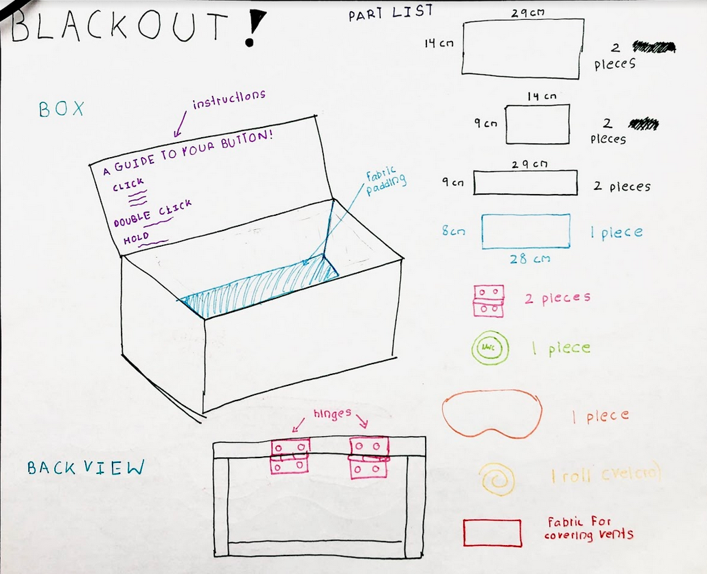

Blackout!
Co-Designer
Divya is a rising senior in high school who lives at home with her parents and her little sister. She uses she/him pronouns (which can be used interchangeably!) and plays varsity field hockey at school. Divya enjoys all sorts of mediums of art, such as clay, paint, and wood. Recently, she's been taking a dive into graffiti and street art and her signature or graffiti 'tag' is a bloody eye! He has been my friend since kindergarten and loves to binge watch Criminal Minds and go for walks with his husky, Moo. Divya gets sudden migraines that give her blurry vision and makes her extremely sensitive to light. Previous solutions such as eye masks didn't work for him as it pressed against his eyes and made the migraine auras worse. Her room also only has blinds, which don't block out light well enough for it not to affect her migraines.
Co-Designer Needs Statement
- Divya needs something that blocks out all light during her migraines so the light doesn’t make it worse
- Divya needs something that won’t press against his eyes and is comfortable enough to sleep in
- Divya needs something that can alert her parents when the migraine starts
- Divya needs something that reminds him to stay hydrated because the lack of water can also bring on migraines
Product Requirements
- Comfortable
- Easy to use
- Portable
- Easy to put on and take off
- Blocks out all light
- Strong material
- Should fit to Divya's face
- Adjustable
- Doesn't touch Divya's eyes
- Reusable
Initial Brainstorming Narrative
When Divya told me about his migraines, I immediately started thinking of some sort of blackout glasses to get rid of the light that made his migraines worse. I realized, however, that traditional glasses wouldn't work because Divya would be sleeping in them, and the frames might make her uncomfortable, so I knew I would have to add a more comfortable way for the glasses to wrap around the face.
I initially looked into specific blackout lenses for Divya. I found that the lenses were viable, but the problem with them would be the light that comes in from the top and bottom, as they weren't close to the face. I talked with Divya and I was given the idea to look into products like ski goggles instead of plain glasses. The pros of ski goggles included the fact that they pressed against the face with foam around it so it wouldn't touch the eyes but still provide coverage. The parts I had to focus on were the vents in the ski goggles where light could potentially come in, and I also had to think about how I would improve on the straps to make it more adjustable and comfortable for sleep.
Initial Prototype

Second Prototype
Objective: to make a pair of glasses that block out light and are also comfortable enough for her to sleep in.
My objective with this initial prototype was mainly to test the comfort of the solution I was looking at, as Divya would be sleeping with this product, so comfort was key. I wanted to try the effect of elastic against her face and if it would be too tight, and also tried mimicking the blackout lenses I was originally planning on using, to see if that would be a good fit.
Assumptions: I assumed that Divya would be alright with wearing something on her face for a long period of time, considering the fact that she had tried eye masks during migraines. I also assumed that he would not toss and turn a lot, as he had mentioned he was a sound sleeper. As for the blackout lenses, I assumed that if there was weight put on it while sleeping, it would not crack or be pushed uncomfortably into Divya's eye.
As my initial prototype was quite simple, I did not have to use any materials that I didn't already have. I used cardboard and measured the shape and size of the blackout lenses I was looking into, and I used a large band of elastic attached to the makeshift lenses to mimic an actual strap.
Testing Plan
I decided to test the comfort of the lenses and how effective it would be at blocking out light. Both Divya and I tested the initial prototype, specifically trying things like lying down and standing up to see how the light bled in, and how the elastic felt against our heads. We tried it in the light with the blinds up and with the blinds down to get a sense of how it would work in different times of the day.
Test Results
As was expected with the rudimentary prototype, it wasn't too comfortable and it let in light from the top and the bottom of the makeshift lenses. Divya found that while the elastic was comfortable to lie down in, it had a chance to be either too loose and let in light that would worsen her migraines, or be too tight and push the lenses against her eyes, making her migraine auras worse. The makeshift lenses let in light from many angles and also pressed against her eyes.
Prototype Conclusions
The conclusion I drew from Divya's discomfort with the elastic was that an adjustable strap, such as one with Velcro, would be a much better fit for him. After talking to others about Divya's problems with the makeshift lenses, I found that something like ski goggles would be a great solution for both of these problems. Ski goggles have foam on the inside of the goggles for increased comfort, meaning that it would hold the lenses away from the eyes. It also meant that the chances of letting in light to the eyes would be greatly decreased, though there were vents in many of the ski goggle brands I looked at. The downside to ski goggles versus blackout lenses would be that I would have to work on covering the lenses in order to not let in any light, but as the pros outweighed the cons, and covering the lenses with something like paint would be easy enough, I decided to go ahead to my next prototype with my new ideas.
Final Prototype
Bill of Materials
- Ski Goggles, https://www.amazon.com/dp/B00ZY21XX2/ ($29.99)
- Wood, Home Depot ($5.74)
- Nail Polish, Black and Top Coat ($8.58)
- Black paint (already had)
- Flic Smart Button, https://flic.io/shop/flic-2-single-pack ($29.99)
- Roll of Velcro ($7.47)
- Padding Fabric (already had)
- Hinges ($2.58)

Build Instructions
BOX:
- Make sure you have the tools for cutting wood and drilling screws (handsaw, drill, driver, etc.)
- Cut your wood according to the specifications on the diagram (2 14x29s, 2 9x14s, 2 9x29s). The measurements do not have to be exact but should be quite precise so the box fits well together
- Construct the box by clamping the pieces together to form the general shape and use your drill for pilot holes, then drive in the screws. The lid will come later. If you're having trouble with the wood splitting, which can happen with less expensive wood, try using a hammer and a nail to achieve the same result.
- When you're ready to attach the lid with the hinges, make sure to first measure to be sure that there's enough space on your top piece for the screws to go in, and that there is space for the hinges to work. Use the screws provided with the hinges and make sure your pilot holes aren't drilled too far. Attach the hinges.
- Paint the box black for a more professional look, taking care to tape the hinges so no paint gets on it.
- Once dry, cut your padding fabric to 8x28cm and glue it inside to the bottom of the box.
- Decorate however your codesigner wants!
GOGGLES:
- Detach the lenses from the ski goggles and paint the inside with the black nail polish, taking care to cover all areas where light might come in. Repeat this twice or thrice more, just to ensure full coverage.
- Cover the inside with the top coat once the black nail polish has dried.
- While drying, focus on the frame of the goggles. Detach the elastic from the ski goggles. 4. Cut the Velcro to the length needed for your specific codesigner and thread it through the gap that the elastic was attached at and stick it firmly in place with hot glue. Take care that the hot glue isn't visible or doesn't leak through.
- While the lenses are still detached, block out the bottom and top vents of the goggles by cutting fabric to the length. Make sure your fabric isn't see through. If it is, like mine was, double it up until it isn't.
- Glue it against the vents, again making sure that the glue isn't visible.
- Test! If any light is still visible, check the nail polish coverage and the vents again and repeat any of the above steps as necessary.
BUTTON:
- Sync your button with your phone (follow the instructions attached, or just download the app and hold down the button).
- Once your app on your phone has found your button, click on it.
- Press on the "click" command and find the music section and add whatever playlist you would like.
- Next, find the volume control and set it to 17% or whatever volume your codesigner wants.
- Allow the app to use your location and add the location control and specify your recipients.
- Find the text message control and add your recipients and custom message.
- Flic requires credits to send the text messages so be sure to buy as many as you think your codesigner would need.
- Add controls for music for the double click and hold commands.
- Test by pressing the button and checking if the music plays at the correct volume and sends the texts with location and the custom message.
- Create a simple guide to what the button does and scale it to the lid's measurements (14x29cm) and print it out and glue it on the inside of the lid.
- Peel off the adhesive backing on the button and stick it on top of the lid.
With my latest prototype, there were multiple things to test. I decided to focus on each part individually, then the whole thing altogether. Firstly, I had Divya try on the goggles in bed to test how comfortable she would be lying down in them, and to see if my improvements from last time had helped with the problem of light coming in. I also wanted her to try the Velcro straps and see if they were comfortable and the right length. For the box, I simply asked her if the instructions were easy to understand and if the box was a good fit for the goggles. For the button, I had her try pressing it and showed her the text messages and the music and volume control so she could come up with what she wanted specifically. At the end, I tested all three components together. I had her take the goggles out of the box and see if it was easy to put on while also pressing the button to start the sequence of events.
Results
Divya found that the goggles were extremely comfortable and an improvement from last time, as the fabric blocked out the light that was getting in. He liked the easy adjustability of the Velcro though he mentioned it would be simpler if the two sides of the Velcro were switched. Divya tried laying down in them and found that it didn't get in the way and was comfortable. She liked the box because it would help her not lose the goggles and provide a safe space to keep them. The use of the button was extremely simple for her and she set her own music and liked the custom message. He said that it was super easy to press the button and have everything done for him and just put the goggles on and rest.

Future Improvements
For future improvements, Divya mentioned that she would like the box to be decorated to fit her own aesthetic, so I'll definitely be doing that! The fabric that blocks out light from the vents does its job, but I would like a more elegant solution in the future. Even though it's on the inside, so it doesn't look bad, it's still a little messy, so making that look cleaner would be cool. The Velcro straps have a problem of getting stuck in Divya's hair, which makes the process of putting them on a little annoying, so I would also like to find a solution to mitigate that. On a larger scale, I would like to expand the use of the button by implementing smart lights like Philips Hue smart lighting with some of the lights in Divya's room so that she can use the button to turn them off in a case where she does not want to go to sleep immediately when a migraine happens, but she doesn't want the light making it worse.
Scalability
Since this product doesn't require much customization to the user, besides the specific music and text messages, I think that with a little more work it has the potential to be scalable.
Design Process Reflection
This project was super helpful to my understanding of the design process! I started the project with being pretty fixated on using these blackout lenses that I had found online, but after a couple of interviews and iterations, I changed my mind and decided to use ski goggles instead. This taught me to be more open-minded about product design, especially in the earlier stages. Also, I was initially only going to do the goggles. However, when Divya mentioned the need for storage and I brainstormed the rest of her user needs with her, I found that I could do a lot more than just the goggles, which is why I added the box and the smart button. I found that there's always ways to improve your product, and I'm really happy I did because it made Divya's migraines even just a little bit easier. I found it helpful to bounce my ideas off of others as well, because even if someone was doing a completely different project, they always had valuable insight to offer and I came up with many of my improvements in that way.